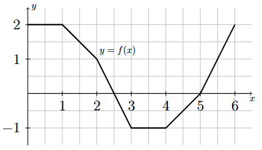
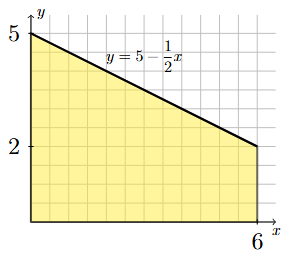
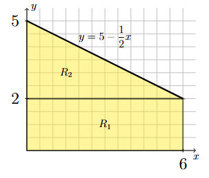
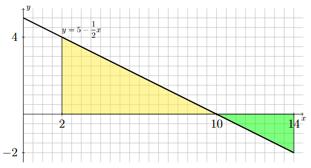
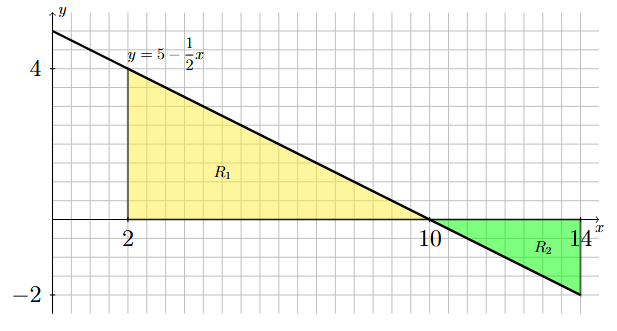

Geometric Interpretation of the Definite Integral#
The Area of a Region#
Geometric Interpretation if \(f(x) \geq 0\).
If \(f(x)\geq 0\) is continuous on \([a,b]\), then \(\displaystyle \int_a^b f(x) ~dx\) is equal to the area of the region between the graph of \(f\) and the \(x\)-axis on \([a,b]\).

Long Text Description
There is a horizontal x axis with the points a and b labeled. There is a curve, y = f(x), which increases and decreases and changes concavity, but always remains positive, plotted above this axis. The region bounded by x=a on the left, x=b on the left, the x axis on the bottom, and y = f(x) on top is shaded yellow and labeled “Area = integral of f(x) with respect to x from a to b”.
Geometric Interpretation for Any Continuous Function
If \(f(x)\) is continuous on \([a,b]\), \(\displaystyle \int_a^b f(x) ~dx\) can be interpreted as the area of the regions that are above the \(x\)-axis minus the area of the regions that are below the \(x\)-axis.

Long Text Description
There is a horizontal x axis with the points a and b labeled. There is a curve y = f(x) plotted on this axis. This curve increases and decreases, has two zeroes, is negative between them, and positive outside of them. It’s concavity is up when it is negative, and down when it is positive. The Region to the right of x=a, above the x-axis, and below the curve is labeled R One. The region below the x axis and above the curve is labeled R Two. The region above the x axis, below the curve, and to the left of x=b is labeled R three.
Example 1#
Using geometry to evaluate a definite integral
Compute \(\displaystyle \int_0^6 f(x) ~ dx\) where \(f(x)\) is given by the following graph.
{kind=link}
Long Text Description
The graph of a continuous function that consists of a sequence of line segments. Starting at the point (0,2) and continuing from left to right, the line segments go through the points (1,2), (2,1), (3,-1), (4,-1), (5,0), and end at the point (6,2).
Step 1: Break up the region into rectangular and triangular pieces.
There are a variety of ways to do this, no one way being better than the other. Make sure that the pieces you create are all between the graph of \(y=f(x)\) and the \(x\)-axis. One possible way to break up the region is shown below.

Long Text Description
The region between y=f(x) and the x-axis is shaded and broken up into rectangular and triangular pieces. Region R_1 is a rectangular region of width 1 and height 2 with its base on the interval [0,1] of the x-axis. Region R_2 is triangular region of width 1 and height 1 with vertices at the points (1,1), (2,1) and (1,2). Region R_3 is a rectangular region of width 1 and height 1 with its base on the interval [1,2] of the x-axis. Region R_4 is a triangular region of width 1/2 and height 1 with vertices at the points (2,0), (2.5,0) and (2,1). Region R_5 is a triangular region of width 1/2 and height 1 with vertices at the points (2.5,0), (3,0) and (3,-1). Region R_6 is a rectangular region of width 1 and height 1 with its top edge on the interval [3,4] of the x-axis. Region R_7 is a triangular region of width 1 and height 1 with vertices at the points (4,0), (5,0) and (4,-1). Region R_8 is a triangular region of width 1 and height 2 with vertices at the points (5,0), (6,0) and (6,2).
Step 2: Compute the total area of the pieces that are above the \(x\)-axis.
Based on the pieces created in Step 2, this corresponds to regions \(R_1, R_2, R_3, R_4\) and \(R_8\). The area of each region is \(2, 1/2, 1, 1/4\) and \(1\), respectively. The total area of these regions is
Step 3: Compute the total area of the pieces that are below the \(x\)-axis.
Based on the pieces created in Step 2, this corresponds to regions \(R_5, R_6\) and \(R_7\). The area of each region is \(1/4, 1\) and \(1/2\), respectively. The total area of these regions is
Step 4: Evaluate the definite integral.
The value of a definite integral is equal to the total area of the corresponding regions that are above the \(x\)-axis minus the total area of the regions that are below the \(x\)-axis. Using the values computed in Steps 2 and 3, we have
Example 2#
Using geometry to evaluate a definite integral
Evaluate the following definite integral by using its geometric interpretation.
Step 1: Draw the region described by the definite integral.
The definite integral corresponds to the area of the region bounded above by the line \(y = 5 - \frac{1}{2}x\), bounded below by the \(x\)-axis, bounded on the left by the vertical line \(x=0\) (i.e., the \(y\)-axis) and bounded on the right by the vertical line \(x=6\).
{kind=link}
Long Text Description
A region of the xy-plane is shaded yellow. The region is bounded above by the line y = 5 - x/2, bounded below by the x-axis, bounded on the left by the y-axis, and bounded on the right by the vertical line x=6. The value 6 is labeled on the x-axis and the values 2 and 5 are labeled on the y-axis.
Step 2: Break up the region into rectangular and triangular pieces.
The region described in Step 1 can be broken up into a rectangular region, \(R_1\), and a triangular region, \(R_2\), as illustrated below.
{kind=link}
Long Text Description
A region of the xy-plane is shaded yellow and broken up into two pieces. The lower region, labeled R_1, is a rectangular region of width 6 and height 2. The base of the rectangle is on the interval [0,6] of the x-axis. The upper region, labeled R_2, is a triangular region of width 6 and height 3. The base of the triangle coincides with the top edge of the rectangular region R_1.
Step 3: Evaluate the definite integral.
Since regions \(R_1\) and \(R_2\) are both above the \(x\)-axis, the value of the definite integral is the sum of the areas of the two regions.
Example 3#
Using geometry to evaluate a definite integral
Evaluate the following definite integral by using its geometric interpretation.
Step 1: Draw the region described by the definite integral.
The definite integral corresponds to the net area of the region bounded vertically between the line \(y = 5 - \frac{1}{2}x\) and the \(x\)-axis, bounded on the left by the vertical line \(x=2\) and bounded on the right by the vertical line \(x=14\).
{kind=link}
Long Text Description
One region of the xy-plane is shaded yellow and another is shaded green. The yellow region is bounded above by the line y = 5 - x/2, bounded below by the x-axis, bounded on the left by the vertical line x=2, and bounded on the right by the vertical line x=10. The green region is bounded above by the x-axis, bounded below by the line y = 5 - x/2, bounded on the left by the vertical line x=10, and bounded on the right by the vertical line x=14. The values 2, 10, and 14 are labeled on the x-axis and the values -2 and 4 are labeled on the y-axis.
Step 2: Break up the region into rectangular and triangular pieces.
The region described in Step 1 naturally breaks up into two triangular regions, \(R_1\) and \(R_2\), as illustrated below.
{kind=link}
Long Text Description
One region of the xy-plane is shaded yellow and another is shaded green. The yellow region, labeled R_1, is a triangular region of width 8 and height 4. The vertices of this triangle are the points (2,0), (10,0) and (2,4). The green region, labeled R_2, is a triangular region of width 4 and height 2. The vertices of this triangle are the points (10,0), (14,0) and (14,-2).
Step 3: Evaluate the definite integral.
Since region \(R_1\) is above the \(x\)-axis and \(R_2\) is below the \(x\)-axis, the value of the definite integral is the difference of the areas of the two regions.
Properties of the Definite Integral#
Properties of the Definite Integral
If \(f\) and \(g\) are continuous on \([a,b]\) and \(c\) is a constant, then
\(\displaystyle \int_a^a f(x) ~dx = 0\)
\(\displaystyle \int_a^b f(x) ~dx = -\int_b^af(x) ~dx\)
\(\displaystyle \int_a^b cf(x) ~dx = c\int_a^b f(x) ~dx\)
\(\displaystyle \int_a^b f(x) \pm g(x) ~dx = \int_a^b f(x) ~dx \pm \int_a^b g(x) ~dx\)
\(\displaystyle \int_a^b f(x) ~dx = \int_a^c f(x) ~dx + \int_c^b f(x) ~dx\)